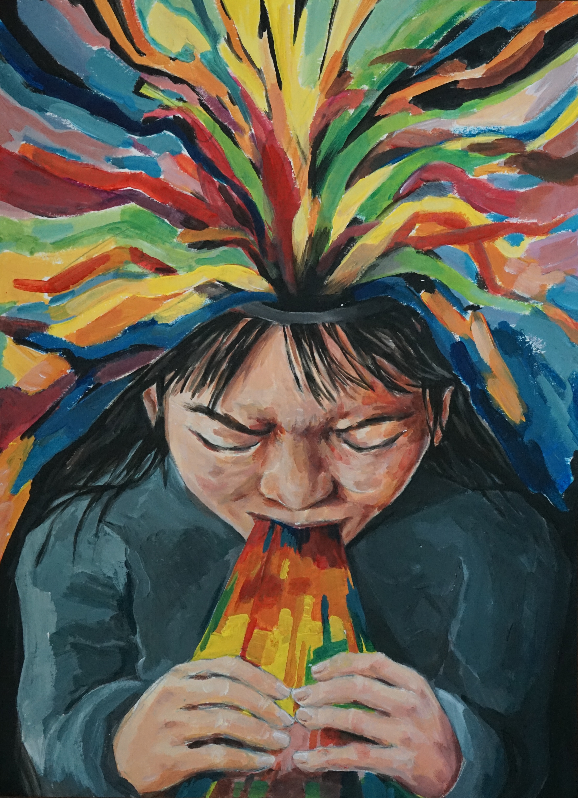
Processing Functions
acrylic on paper
We process and take in. But we need to express so we are not broken by the deluge of what we consume. So we speak, we argue, we sing.
As the landscape of social media and our news becomes ever more sensational and untruthful, it becomes harder and harder to do this filtering and producing. So I create to take a stand against the AI slop that is ruining what we consume.
Having always had a fascination with weaving and 3D printing and using the inharmonic to create something cohesive and whole, I wanted to represent the media we consume as ribbons. In this piece, too, I tried to make harmony out of color, make cohesion out of the abstract (the color) and the realistic (the human).

My Body, My Choice
acrylic on paper
Given the jurisdiction of my own body and my own time, I'm still afraid I'd give it away.
I don't know if my desire to be kind is human nature or gender socialization. I don't know if I want children because I'd be a good parent or because I'm swayed by the hormones I never asked for. I don't know whether I shave my legs because hair is naturally grotesque or that I've been told so.
Painting and carving images into my own skin, one hand is bloody with the evidence of my participation, another muddied by attempts to be radiant. So I've become the master of my own immolation.
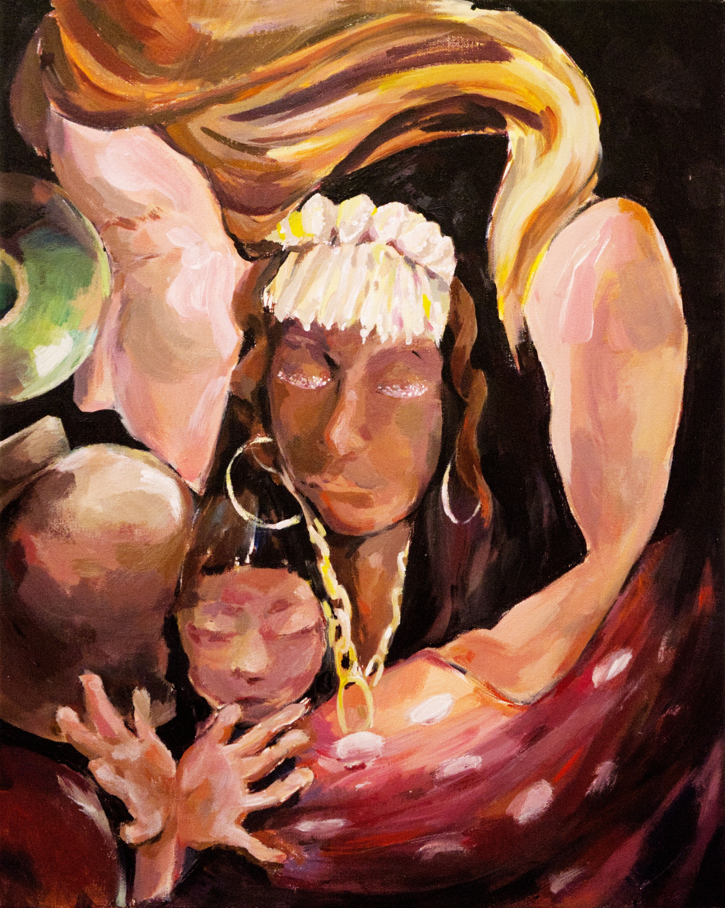
Immaterial Immaternal
acrylic on canvas
Social perception of gender differs across cultures, yet women are the Second Sex just the same. There's an unusualness, an otherness, to the way we live.
Elaborate jewelry are chains. Muscled arms are cradles. Bowls and urns are vessels, like ones we've crafted and carried throughout archeology, but also as an allusion to our childbearing bodies. Our hands are not bound by physical constraints but the calling of obligations. We hold onto Rosie's headscarf like the figments of dreams that tell us we can be successful, powerful, and respected just the same. So we close our eyes and feel that destined womanhood, weighing.
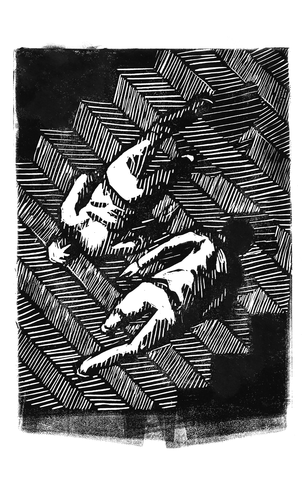
Angles of Refraction
linocut print on paper
You and I can see the same thing and understand it in two completely different ways. In fact, we are probably doing it right now.
The world isn't black and white, but the ink and the paper are, so I did my best to meet in the middle with hatching. We each see the world with a different refraction index and different lived experiences, so our angles are all scattered into distinctive perspectives.
After all, in relativity, no reference frame is more correct than the others. So there's no absolute truth. No correct way of living, parenting, thinking, voting. We just do what we think is best, walk the stairs in the direction we consider is up, and try not to question it.
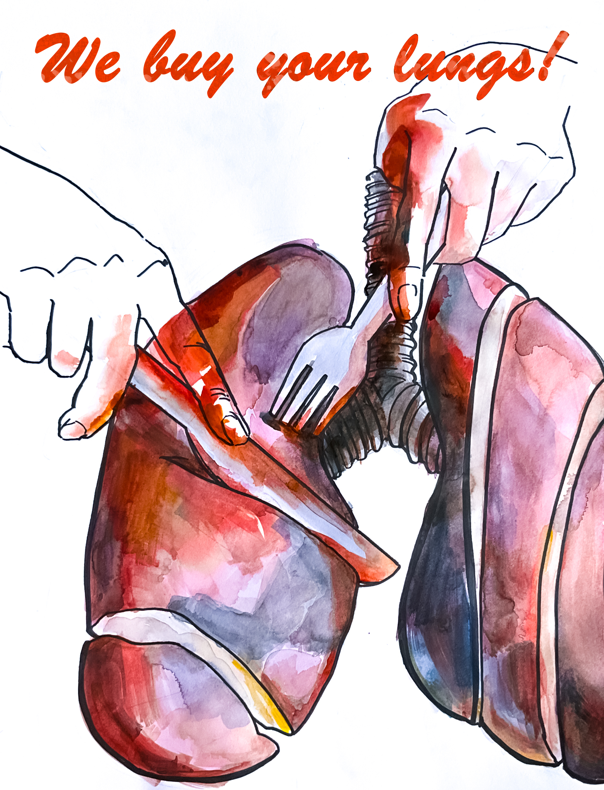
Lungs
watercolor and marker on paper and digital
I recall my art teacher, in a back-in-my-day rant, telling us about people selling their organs to purchase cell phones they couldn't afford. This was perhaps China in the 2000s, but where hasn't commercialism reached? With the lost generation's dustbowl memories and my grandparents' communist famines went away frugality. Advertisements are tempting. Conformity of expenditure is convenient. Spending is liberating.
We don't sell our kidneys for a dress we'd wear twice nowadays. We sell attention, tossing our anxieties into the Rube Goldberg machine of social media algorithm to e-commerce site to mirror to closet to dustbin. We sell our lifespans to sparsely-regulated food conglomerates, tobacco companies, and big pharma. We sell the lives of our children to fossil fuels, Bitcoin mining, and the automobile.
In the in-your-face style of the prosperous, post-war 50s advertisement posters, I capture this immolation.
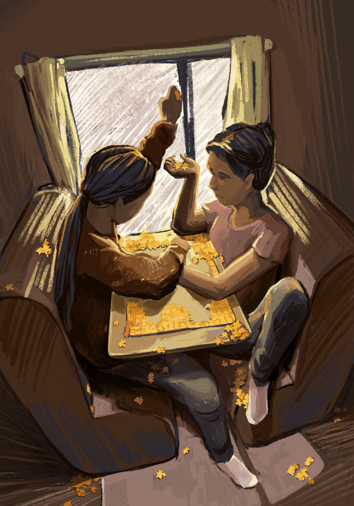
Entropy and Everything
digital
The second law of thermodynamics states that entropy in a closed system never decreases. Under the governance of time, the order around us falls into chaos.
I had spent a Thanksgiving holiday on an RV trip with my family friends. We played silly card games and board games at the small table, the six of us all sitting along two seats designed to fit one and a half each. No matter how well-meaning we were to each other, when space was tight, we knocked over pieces and fought and elbowed. But we had fun, lots of fun.
So in this piece, I tried to see how uncomfortable a composition can be but still remain acceptable to convention. I imagined how light and shadow would dance across a color wheel, and put it here too. The picture isn't detailed, it's hazy in parts, it's untextured, as memories of an RV trip years ago would be. If you think the scene is musty, then I'd have succeeded.
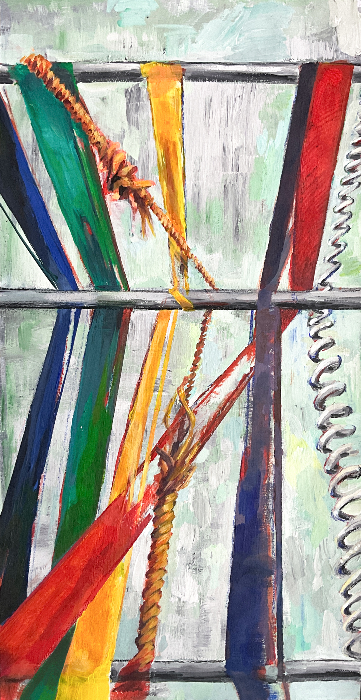
The Loom
acrylic on paper
All of us have felt different, weird, or embarrassed about ourselves. We notice, even if minutely, when we fall short of the expectations of others. Schooling never fits everyone—students who can't sit still or auditorily process information are pushed through an indifferent standardized system. There's a shaping, a stretching of our bodies and minds, to form a common social fabric in the name of efficiency and productivity. No matter how much we think we are above it, conformity finds its way into every thought we think and every action we complete.
We can reframe these differences, weirdnesses, and embarrassments as uniqueness, unorthodoxy, and diversity. After all, we have always felt out of place—the only space we all share is our placelessness. So we can either continue to deny the right to existence of our differences, or we can recognize, persist in, and challenge the set of conditions we defy.
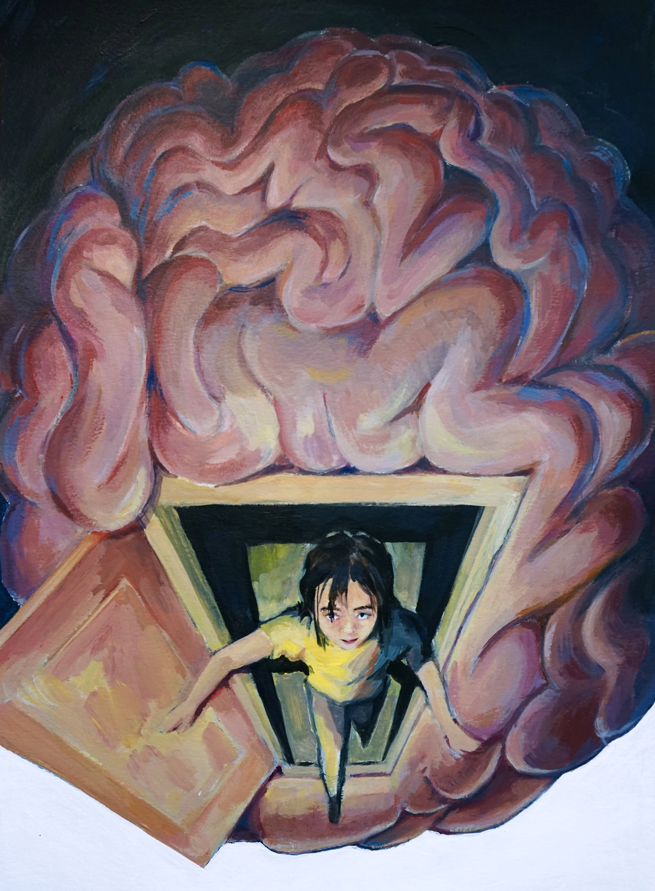
Escaping Freud
acrylic on paper
By the 20th century, we realized from Freud that the experiences of our childhood largely determine who we can become. For the first time, we understand why we are broken. But with this understanding, we also render ourselves helpless. I have problems, we have problems, with the way we socialize and deal with pressure as a result of our childhood. So we define ourselves by our traumas and limits.
But oh isn't it burdensome to carry this definition, to entrap ourselves by a fixed way of thinking? "Don't fix yourself to labels," her mom would say. "This is water," David Foster Wallace said. So she steps out of her own expectations, onto the blank canvas, to reinvent herself.
And I fall back into the habit of using familiar acrylics, but hey, I left the bottom white against rules about aesthetics, so maybe I am escaping autopilot.
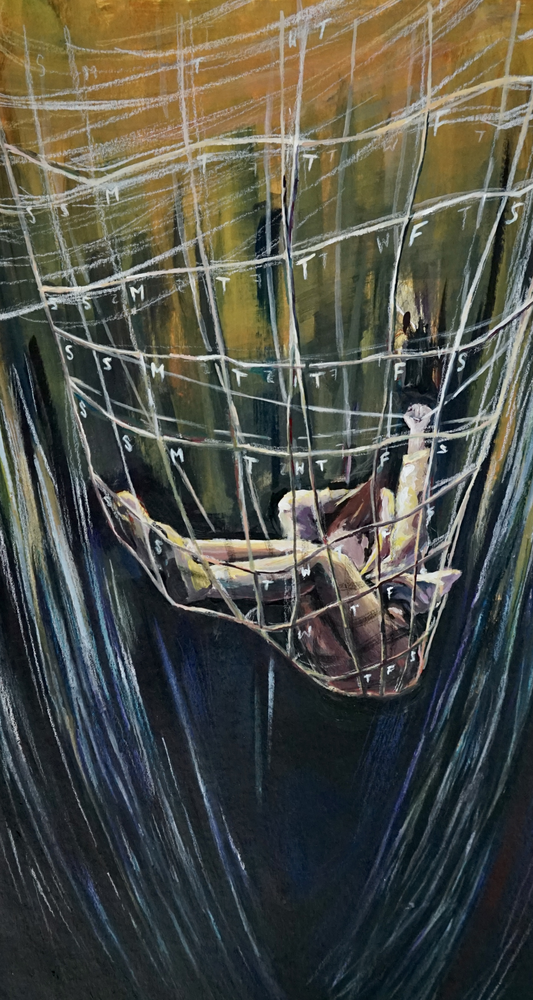
Not the Wormhole I Was Looking For
acrylic, colored pencil, and gel pen on paper
As a result of relative economic insecurity, we in the 21st century have become obsessed with productivity as if strong willpower can negate the larger forces of social immobility. Gurus sell us cheat codes and shortcuts, and promise us time-travel wormholes; all in the name of self-made success. Sometimes, it's a direct force—your parents and teachers pushing you, expecting more of you; but most often, it's subtle, in your Instagram feeds and coworker's lunches, which somehow grows a parasite in your own mind.
Socialists would tell you that it's a distraction to have you fight your own incapacity rather than the CEOs and investors on Wall Street. Other social media gurus tell you it's toxic, and fight back with messages about mental health. But worst of all, you've been set up and trapped to hate yourself if you stop chasing productivity, but you also hate yourself when you are trying.

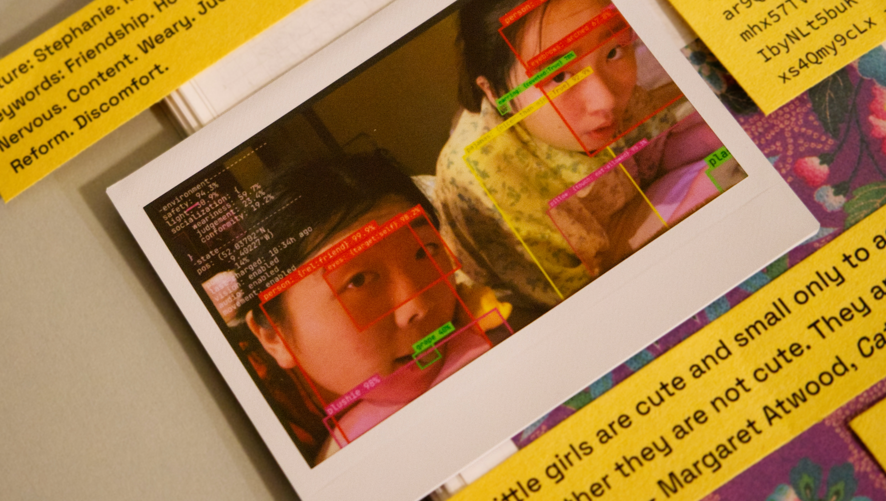
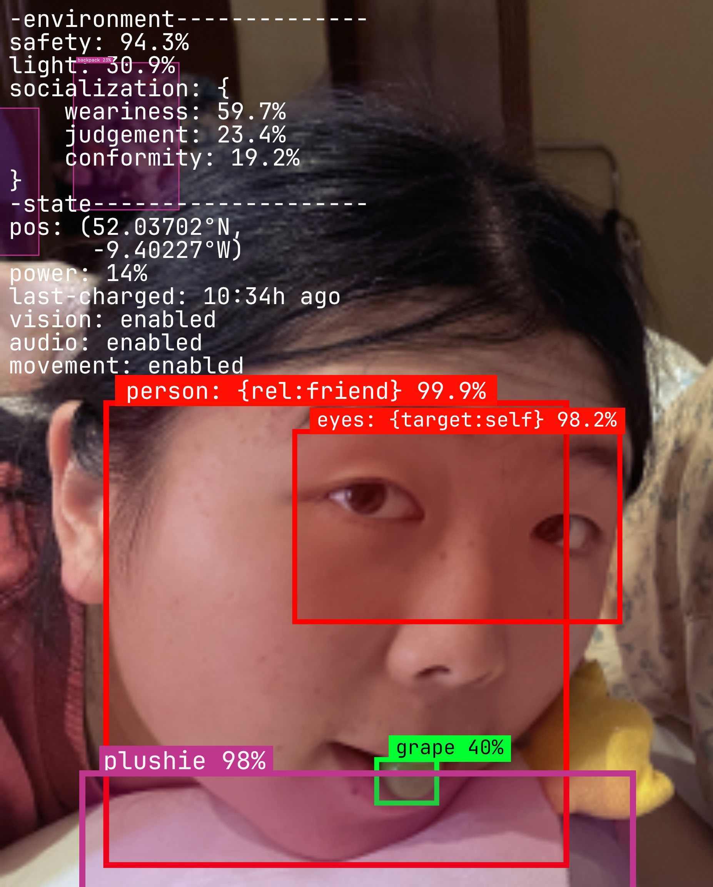
Scrapbooking for Robots
digital and scrapbooking
I've imagined what it's like to be a dog, and have its limited intelligence. To be a bee, and live on collective phermones. To be a tree—do trees feel pain when their branches are cut? Do they unleash a silent scream? There is a boundary we humans seem to draw on what we consider conscious and aware—whether they feel feelings "like us," whether we should care for them like we do us. So we step on ants, slaughter chickens, and go to war.
What gave my consciousness to my body? What made me deserving of decent treatment? Would we allow our definition of consciousness to AI, too, when they wake up, reason logically, and socialize with enough similarities to our own neuroscience?
In this piece, with my experiences with software systems and computer vision, I imagine how an AI being could learn to replicate human emotions and make interpersonal connections. Would we then still gatekeep what is considered sentient when they extend our compassions and fear our fears?

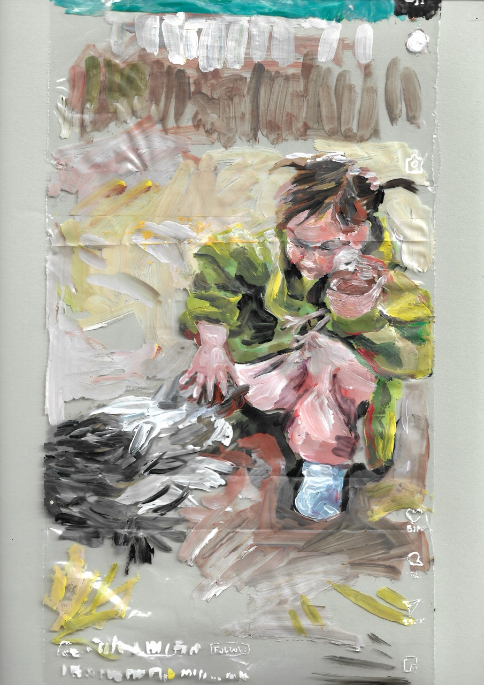
Reaching for Issues
acrylic on cardboard and plastic
For the better half of the past decade, we've habituated to the taste of flickering, fleeting thoughts—what we might call short-form videos or TikToks. Off with the high chair—we weaned ourselves off television, onto this new substance now. But maybe consuming a more amateur diet of sensational, psychedelic Instagram shorts isn't growing up. It's losing ourselves to addiction. Reaching was a ubiquitous human experience, degraded now into a preoccupation.
Top: Digital ones-and-zeros, surrounded by what I imagine heaven to be.
Front: A hand, reaching. For a solution, a bandage in the comfort of companionship.
Side: A teddy bear. From our childhoods, always there to listen when we aren't yet ready to confront worldly realities.
Within: Rather than tissues, an artificial, plasticky kind of softness. When you reach for a single square, you get an unending content strip. You can crumble and scream into it, but it won't even wipe your tears.
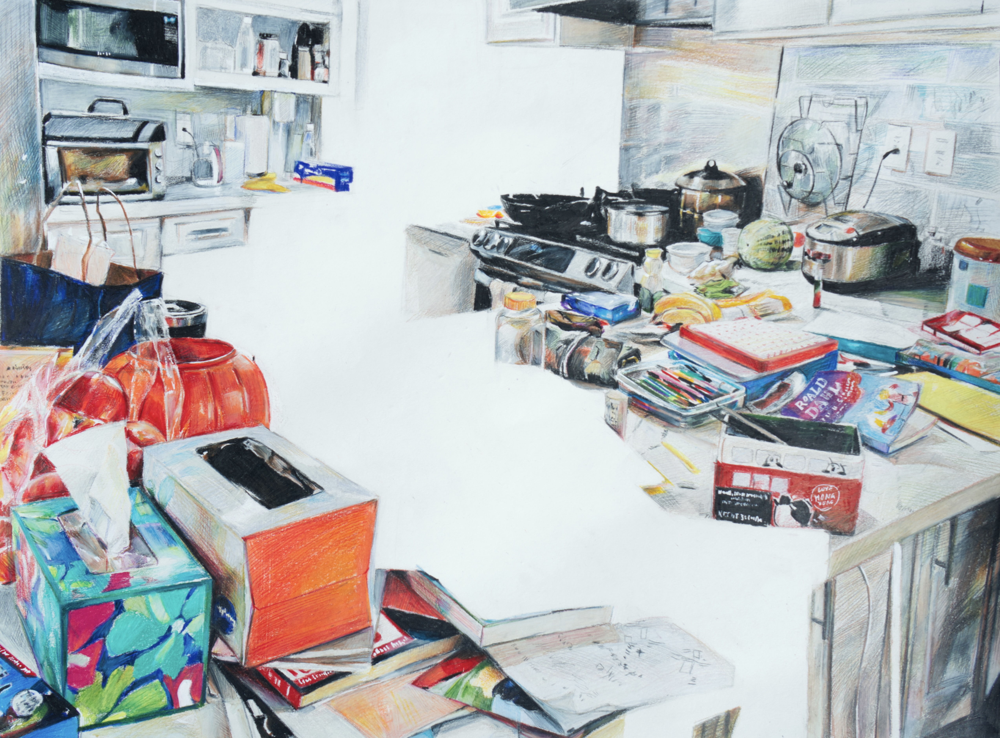
This Piece is Missing Focus
colored pencil and gel pen on paper
How does one's home get like this? Well, like the disorder in this piece, there is too much going on in the lives of everyone who lives at this address, that we neglected to keep the kitchen countertop organized. So I took a photo to document the chaos, which transformed into this piece, much to the dismay of the home's other residents. My mom was always embarrassed by the chaos, so she went on an organizing spree before visitors came over. I judged this as a product of Chinese conformity, where external appearances and pleasantries hold all above sincerity. Whereas for a long time, people saw art as only aesthetics, here I instead document truth.
When life is too busy and the pressure unbearable, we long for an emptiness, for an eternal sleep. So from the center of this kitchen, I tear space apart to make way for somewhere where your eyes can find peace.

Even after everything, remember that we are still free
acrylic and colored pencil on paper
The current political climate—division and easily accessible hatred—made a mark on my generation. As someone who has never held citizenship and was born in a totalitarian state where the only option was complicity and conformity; I always dreamt of the right to vote, to speak my mind.
So, if our division is a product of our ability to express ourselves freely, then shouldn't we celebrate this division? Celebrate our differences? Celebrate how these conflicts occur only in online comment sections and family gatherings, not amidst blazing gunfire and rolling tanks on the streets in Tiananmen Square.
So while my mind struggles to come up with ways to solve a nationwide division, to solve division at my school and in my family, I also appreciate division for what allowed it to be—our democracy, our constitution, and our common dreams.
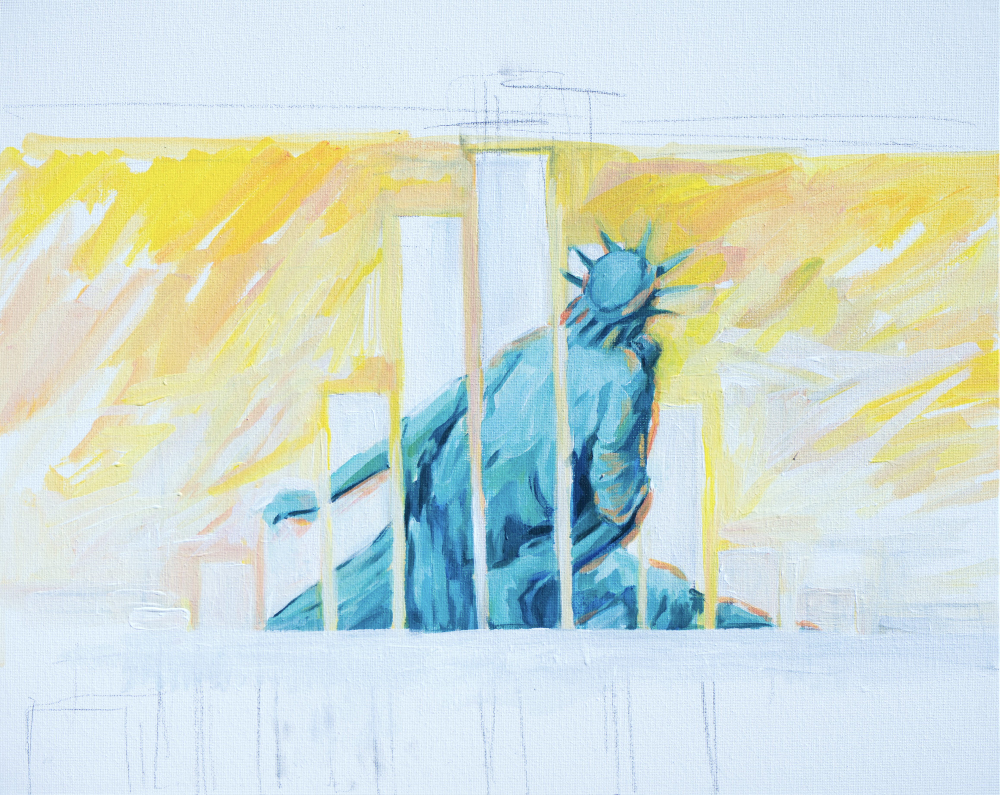
Liberty Leading the People
acrylic on canvas
As a counterclaim to the previous piece, so that we avoid diving too deeply into denialism; there is probably something wrong with the current state of our democracy, lest we have forgotten history.
There seems to be an increasing difference in what people seek from our democracy. "Young women for abortion rights, young men for the economy; white suburbanites for security; Arabs for peace" is what I have heard from a month's worth of the New York Times. Our democratic government can't function to serve all those interests, so it's broken by these divisions.
I drew this digitally and nine months later decided to memorialize it in painting, like history. This is an epitaph to mourn the joy and idealism we have lost in the past two decades of this American story.
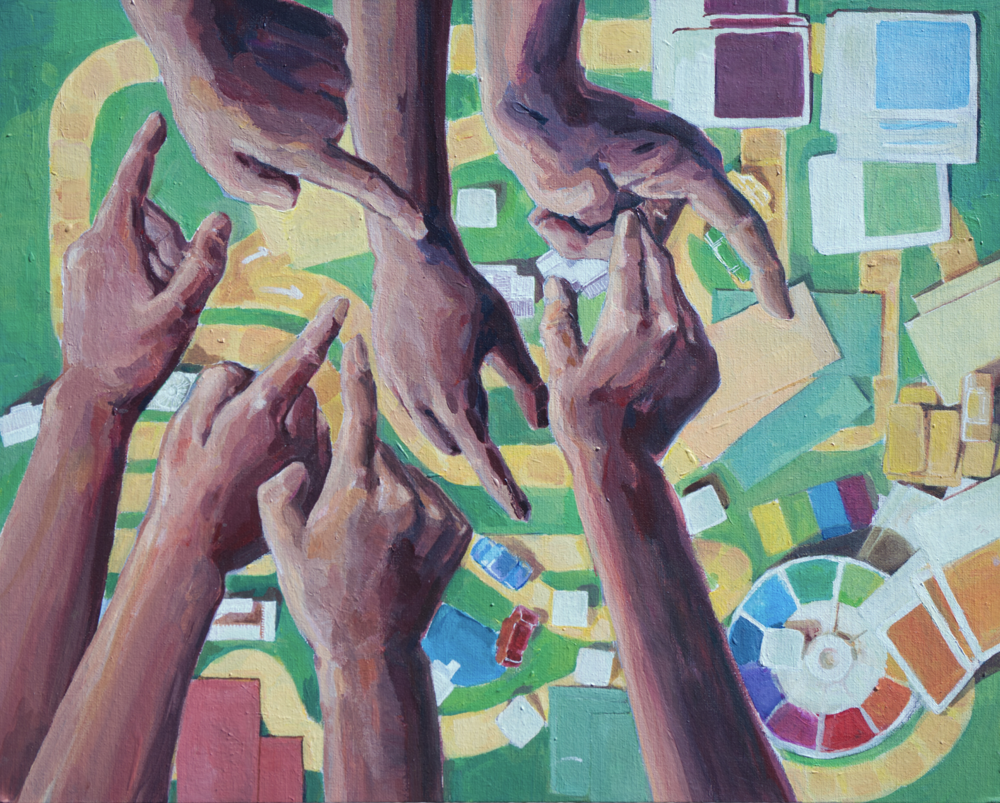
The Game of Life
acrylic on canvas
In this piece, I wanted to explore the dynamics of societies and systems through a medium I know well—tabletop games. The canvas board this was painted on is very much reminiscent of a playing board. The acrylic allowed me to bring out the plastic and color in the game pieces.
The Game of Life is a board game that reflects the American Dream from the 1970s and 80s. You want to get two kids, make money, and afford a mansion upon retirement. The game set us up to compete—to fine players when they speed, to deny others of careers and homes. So perhaps it's the promise of prosperity in a philosophy from that era that set us up to be more competitive, more self-interested, and more angry. It pitted us against each other rather than the system—the game—which trapped us in this dilemma in the first place.

Am I Your Reincarnation?
acrylic on canvas
Many Chinese atheists believe casually in reincarnation. Andy Weir's The Egg introduces a new facet to this belief: We are all one soul, eon-hopping birth after birth. I am my mother, and I will be my children. I had been Genghis Khan, I had been Nero. If I do harm, it falls upon another of myself. The suggestion is a kinship among the singular soul of humanity.
No matter the nature of death, we are held from this unity by the discontinuity of consciousness. I can imagine what it'd have been like to be my mother, her hopes and fears during the rapid economic growth of 80s China. Yet, I can't be her. I can't fully understand her, let alone a stranger. This chasm challenges our ability to empathize with the perspectives of others. So we are divided. So we are self-centered.
Inspired by illustrations of the multiverse, uncrossable by our physics, I paint fragments of consciousness sitting in void—fragments I saw through the media and in the Google Earth-inspired game, GeoGuessr.
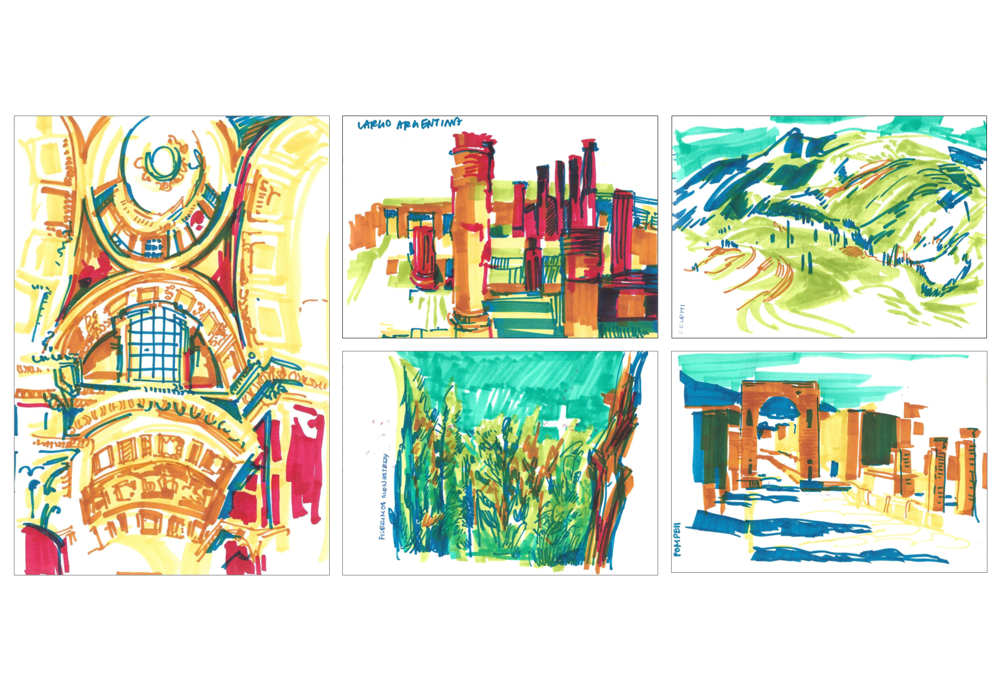
Dreams from Another Life
alcohol marker on paper
I took a trip with my class to Italy and Greece. There, I drew. The light yellow marker for the structure of the building or landscape, the rest for the shadows, the materials, and the bumps.
I drew to take in the details of that moment because, among the bleeding colors on the pages of my sketchbook, I can still feel the crowds swirl in the Vatican, and hear the murmurs and prayers of the millions who have walked among those pillars. I can smell the bread rising and hear the oven fires crackling as dawn cracks on the bakeries of Pompeii. I can be the priestess at Delphi who between prophetic sessions looked onto the mountainside, felt the breeze come through the valley, and dreamt of returning home.
So when you close your eyes and see those visions, is it just your imagination, or are they memories from another life?